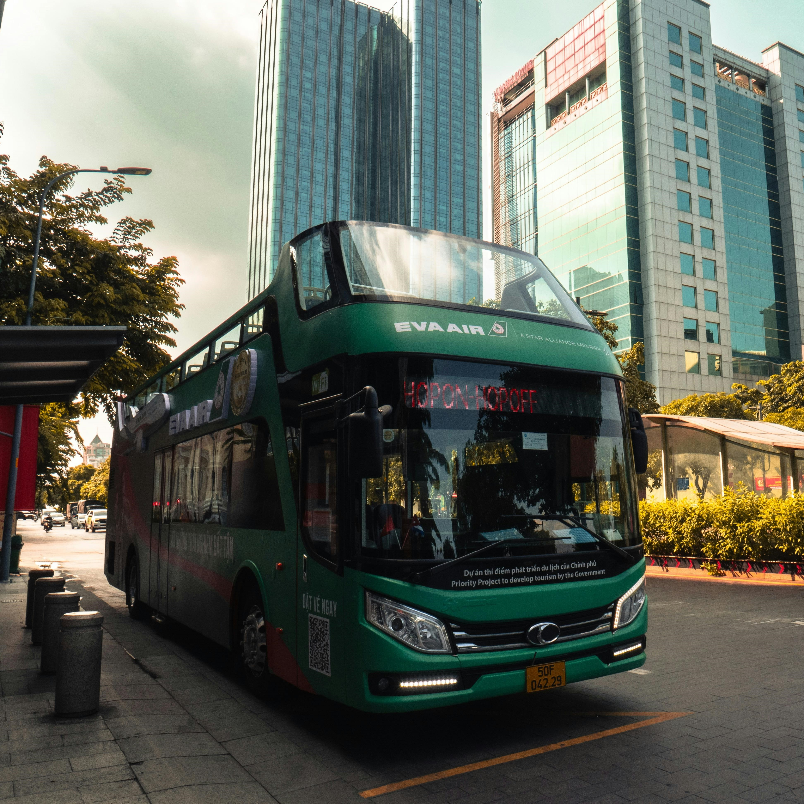

Transportation around Taniti
Within Taniti City:
Taniti City is fairly flat and very walkable. Many tourists stay in the area surrounding Merriton Landing: this area is easy to explore on foot.
The city has public buses that run from 5:00 AM to 11:00 PM every day. Taxis are also available in the city.
Inside and outside the city:
Rental cars can be rented from a local rental agency near the airport for travelling both in and outside of the city.
Bikes and helmets are available to rent from several venders. Helmets are required by law.